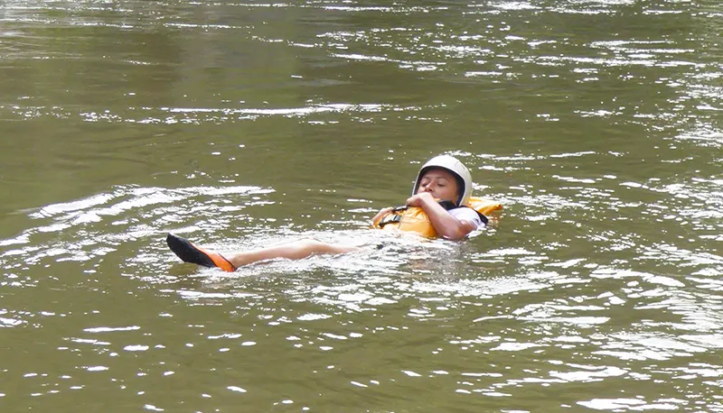

Descripción
La experiencia comienza en nuestro Punto de Encuentro, donde te recibirán con una cálida bienvenida y te proporcionarán información detallada sobre el itinerario. Después de equiparnos con la indumentaria adecuada, nos dirigiremos hacia el Parque Nacional Grutas de Cacahuamilpa.
Al llegar, exploraremos la célebre Gruta, con sus dos kilómetros de recorrido, maravillándonos con las formaciones creadas por la filtración del agua en la roca calcárea. Descenderemos luego al fondo del cañón para admirar las Dos Bocas, el punto de encuentro de los ríos subterráneos San Jerónimo y Chontacoatlán.
Nuestra travesía continuará a lo largo de 14 kilómetros de río, enfrentando rápidos de categoría II y III.
Finalmente, regresaremos al Punto de Encuentro para deleitarnos con un refrigerio, poniendo así punto final a esta emocionante aventura.

Recomendaciones
Incluye
El recorrido de Rafting Amacuzac te incluye el traslado del Punto de Encuentro al río y del río al Punto de Encuentro.
Así como el equipo necesario para la actividad como chaleco de flotación y casco.
Entrada al Parque Nacional Grutas de Cacahuamilpa
Un refrigerio en el río y comida completa al final del recorrido.
Ríos Mexicanos te incluye en tu recorrido un seguro en caso de accidentes en el río.
Que traer
Ropa apta para nadar, traje de baño además de short ligeros y playera de manga larga como son las licras de tela sintéticas. Calzado para mojar con agujetas y suela gruesa. Además de una muda de ropa y calzado para después del río.
Es importante que si estas bajo algún medicamente, no olvides traerlo y mantenernos informados, del mismo modo, te recomendamos traer barras energéticas y bebidas para hidratarte.
Datos
La misión de Rafting Alto Amacuzac de Ríos Mexicanos es fomentar las actividades de aventura en la naturaleza, destacando la extraordinaria belleza del río Amacuzac. Nos dedicamos a resaltar la importancia de la protección y preservación de este ecosistema, ya que constituye el hogar y refugio de una amplia diversidad de vida silvestre, tanto endémica como migratoria. Estamos comprometidos con la promoción de la conciencia ambiental, buscando inspirar a todos a cuidar y valorar este tesoro natural.
El recorrido es de 14 kilómetros de descenso en el río.
La temporada de Rafting Alto Amacuzac va de Agosto a Octubre.
Dificultad media, debido a los rápidos clase II y III, y de dificil accesibilidad.
Observación de aves y fauna local.
De julio a octubre es temporada de agua alta, ideal para mayores de 10 años.